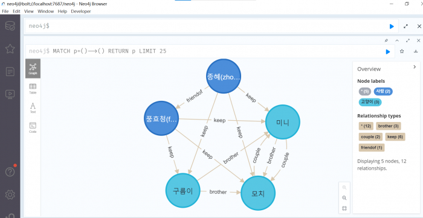
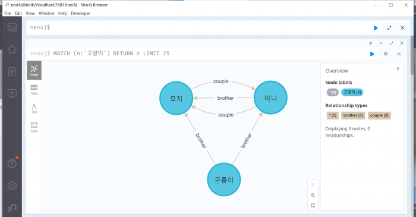
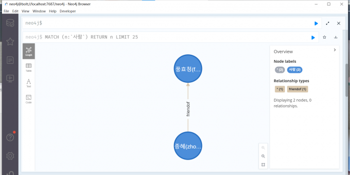

중간고사-2019110694 zhonghui
목차
우리집에 냥이들
구름이의 자기소개
여러본 안녕하세요!
저는 우리집에 젤일 오래 산 맏이 구름이 입니다.
저는 동생이 2 명이 있습니다.
첫 번째 동생 은 나이가 어리지만 동그스름한 "미니" 이고
막내 는 태어난 지 5개월 밖에 안 된 공주 입니다.
다은은 상세하게 설명해 드립니다!
고양이들의 기본 정보
- 이름: 구름이 [1]왕자님
- 영어 이름: Rollmmy
- 성별: 왕자님
- 생일: 2021.11.30
- 체중: 4.45kg
- 품종: [페르시안]
- 모색: 화이트
- 눈동자 색깔: 홍채는 그러데이션로 분포됩니다.
눈동자에서 바깥쪽으로 각각 녹색 노란색 파란색 입니다.
{kind=link}
- 이름: 미니통통한 왕자님
- 영어 이름: Mini
- 성별: 왕자님
- 생일: 2022.04.01
- 체중: 3.65kg
- 품종: [아메리칸 숏헤어]
- 모색: 흰색, 검은색, 얼룩무늬, 줄무늬
- 눈동자 색깔: 노란색
{kind=link}
{kind=link}
고양이들의 사진
{kind=link}
{kind=link}
{kind=link}
{kind=link}
{kind=link}

| “No matter what you step in, keep walking along and singing your song...because it's all good. “ | ||
| “Pete the cat” |
| “나는 고양이다.
|
||
| 나쓰메 소세키 『나는 고양이로소이다』 |
고앵이들의 위치
<- 이 버튼을 누르면, 표시된 마커를 한 번에 볼 수 있습니다.
고양이 소개 영상
Neo4j 관개도
{kind=link}

{kind=link}

{kind=link}

주제의 대한
이유
이번 과제의 주제는 우리집의 고양이로 선정하는 이유는 바로 다은과 같습니다.
우선 제가 룸메이트와 함께 키운 첫 고양이 "구름이" 는 저희 인생의 첫 아르바이트를 통해 얻은 수입으로 구입했습니다. 그래서 “구름이”는 우리에게 매우 깊은 의미가 있습니다.
둘째, 사실 고양이의 성장 과정은 아이와 같으며 순식간에 지나갑니다. 그래서 저도 이 번의 기회로 그들의 성장과정을 기록하려고 합니다.
게다가 제가 중국에서도 고양이 한미리 "미미"를 키웠기 때문에(원래 엄마, 아빠, 남동생과 함께 돌보다가 이제는 할아버지와 할머니를 모시라고 했어요!), 그 고양이는 넘 넘 보고 싶습니다. 그리고 "미미"도 개냥이였는데 오래 함께하지 못해 니까 그는 생각할 때 늘 허전함을 느껴졌습니다. 그러으로 제가 고양이를 그렇게 많이 키우는 이유 중 하나는 바로 "미미"가 같은 시공간에서 같이 있어줘서 그런 것 같습니다. "미미"가 다른 형식으로 제가 대신 우리 가족에게 힐링을 줘서 그는 그냥 고양이가 아니라 우리 가족 중 빼놓을 수 없는 멤버입니다.
의미
이번 페이지 제작을 통해 원래 고양이들이 생각보다 빠른 속도로 성장하고 있다는 것을 알게 되었습니다. 그래서 사진을 많이 찌거나 많이 놀아줘야 내가 그들의 성장하면서 같이 했던 흔적도 남겨 해야 할 것 같습니다.
또 인간과 고양이가 함께 있는 과정에서 애틋한 감정이 생긴다는 사실도 깨달었습니다. 그래서 동물도 생명만은 아닙니다. 때로는 그들이 우리 필요한 것이 보다 인가를 동물들이 더 필요합니다. 그러니 더 이상 모든 동물을 다치게 하지 마세요.